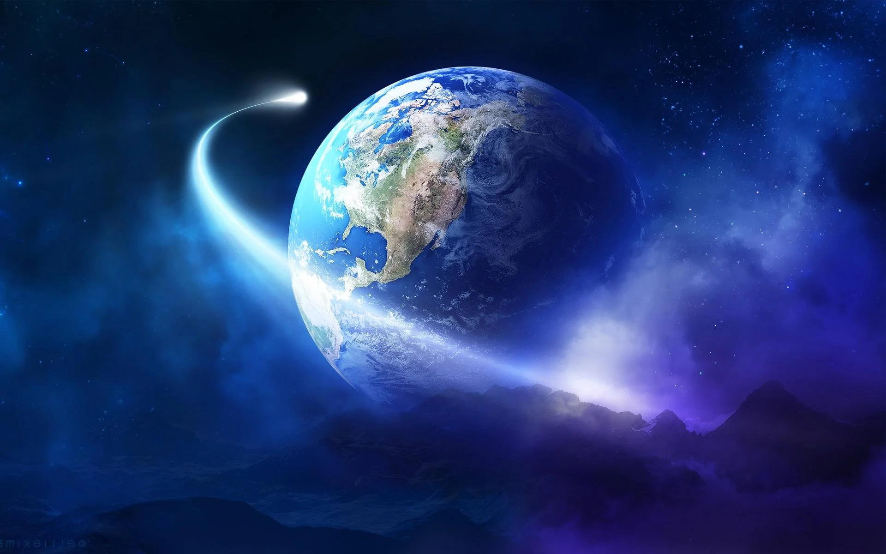
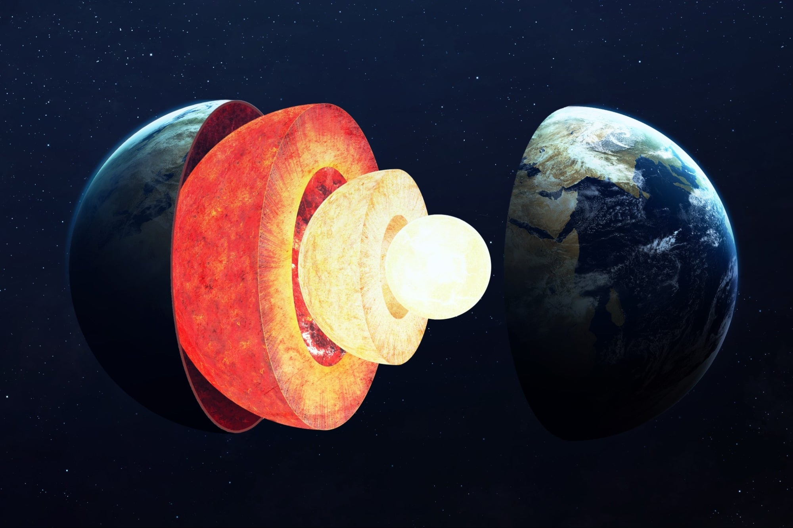
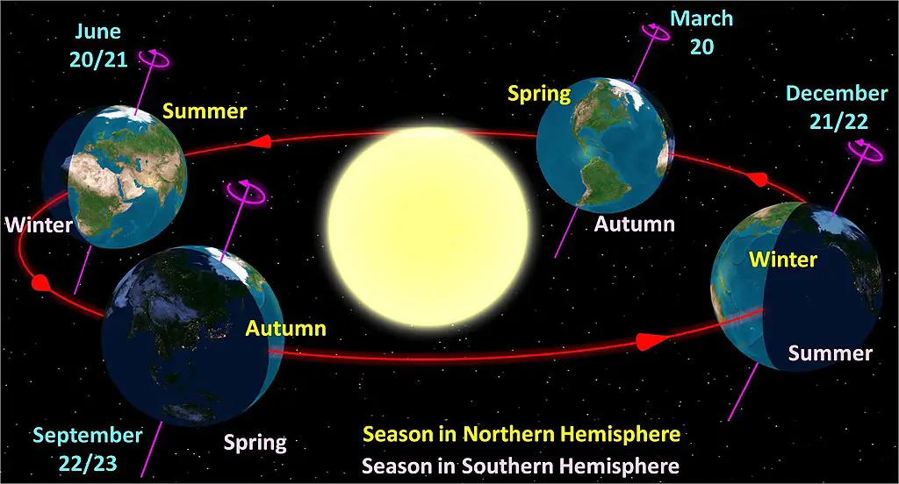

Nama dan etimologi
Dalam bahasa Inggris modern, kata benda earth dikembangkan dari kata bahasa Inggris Pertengahan erthe (dicatat pada
1137), yang berasal dari kata bahasa Inggris Kuno eorthe (sebelum 725), sedangkan kata itu sendiri berasal dari kata
Proto-Jermanik *erthō. Earth memiliki kata kerabat pada semua bahasa Jermanik lainnya, termasuk aarde dalam bahasa
Belanda, Erde dalam bahasa Jerman, dan jord dalam bahasa Swedia, Denmark, dan Norwegia. Earth adalah perumpamaan
untuk dewi paganisme Jermanik (atau Jörð dalam mitologi Norse, ibu dari dewa Thor).
Dalam bahasa Indonesia, kata bumi berasal dari bahasa Sanskerta bhumi, yang berarti tanah, dan selalu ditulis dengan
huruf kapital ("Bumi"), untuk merujuk pada planet Bumi, sementara "bumi" dengan huruf kecil merujuk pada permukaan
dunia, atau tanah

Komposisi dan struktur
Bumi tergolong planet kebumian yang umumnya terdiri dari bebatuan, bukannya raksasa gas seperti Jupiter. Bumi adalah
planet terbesar dari empat planet kebumian lainnya menurut ukuran dan massa. Dari keempat planet tersebut, Bumi
merupakan planet dengan kepadatan tertinggi, gravitasi permukaan tertinggi, medan magnet terkuat, dan rotasi
tercepat, dan diperkirakan juga merupakan satu-satunya planet dengan tektonik lempeng yang aktif.
Bentuk Bumi kira-kira menyerupai sferoid pepat, bola yang bentuknya tertekan pipih di sepanjang sumbu dari kutub ke
kutub sehingga terdapat tonjolan di sekitar khatulistiwa. Tonjolan ini muncul akibat rotasi Bumi, yang menyebabkan
diameter khatulistiwa 43 km (kilometer) lebih besar dari diameter kutub ke kutub. Karena hal ini, titik terjauh
permukaan Bumi dari pusat Bumi adalah gunung api Chimborazo di Ekuador, yang berjarak 6.384 kilometer dari pusat Bumi,
atau sekitar 2 kilometer lebih jauh jika dibandingkan dengan Gunung Everest. Diameter rata-rata bulatan Bumi adalah
12.742 km, atau kira-kira setara dengan 40.000 km /π, karena satuan meter pada awalnya dihitung sebagai 1/10.000.000
jarak dari khatulistiwa ke Kutub Utara melewati Paris, Prancis.

Rotasi dan orbit
Kala rotasi Bumi yang bersifat relatif terhadap Matahari disebut hari Matahari adalah 86.400 detik dari waktu Matahari
rata-rata (86.400,0025 SI detik). Karena periode hari Matahari Bumi saat ini lebih panjang dari periode ketika abad
ke-19 akibat akselerasi pasang surut, setiap hari bervariasi antara 0 hingga 2 SI ms lebih panjang.
Bumi mengorbit Matahari pada jarak rata-rata sekitar 150 juta kilometer setiap 365,2564 hari Matahari rata-rata, atau
satu tahun sideris. Dari Bumi, akan terlihat jelas gerakan Matahari ke arah timur dengan laju sekitar 1°/hari, yang
memperjelas diameter Bulan atau Bumi setiap 12 jam. Karena pergerakan ini, Bumi membutuhkan waktu rata-rata 24 jam (atau
hari Matahari) untuk menyelesaikan putaran penuh pada porosnya sehingga Matahari bisa kembali ke meridian. Rata-rata
kecepatan orbit Bumi adalah 29,8 km/s (107.000 km/h), cukup cepat untuk menempuh jarak yang sama dengan diameter planet,
atau sekitar 12.742 km dalam waktu tujuh menit, dan jarak ke Bulan, 384.000 km dalam waktu 3,5 jam.
